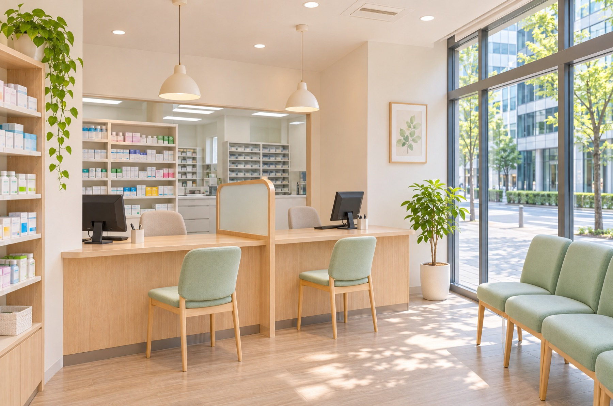

見学・応募
まずは、薬局の空気を
見にきてください。
見学だけでも大歓迎です。お昼休みの30分でも大丈夫。
履歴書はいりません。
数字で見る はのね薬局
月の平均残業
5時間
閉局後15分で、みんな帰ります
年間休日
125日
土日祝休み。夏・冬に連休あり
有給の取得率
92%
半日単位でも取れます
1日の処方箋
約60枚
1人ひとりに時間をかけられる量
※数字はすべてサンプルです（架空の薬局の例）。

はのね薬局について
運営する株式会社はのね（架空）は、本町・堺筋本町・淀屋橋で3つの薬局を開いています。近くのクリニック3院と顔の見える関係をつくり、お昼休みに来る会社員の方から、ご自宅で療養中の方まで支えています。
近くのクリニックとは月1回の勉強会で顔を合わせます。疑義照会も電話一本で気軽に。
午後に2〜3件、ご自宅や施設を回ります。外来とは違う「暮らしの中の薬」が見えます。
同じ患者さんを何年も担当できるので、ちょっとした変化にも気づけます。
先輩の声
「レジとシフトに追われていた頃より、
薬の話をする時間が3倍になりました。」
「子どもの迎えに間に合う。
それだけで、働き方の悩みがほとんど消えました。」
※人物・コメントはサンプルです（写真はAI生成）。
1日の流れ
8:45
その日の在宅訪問や、気をつける患者さんを全員で確認します。
9:00
午前は近くのクリニック帰りの方が中心。1人あたり5分ほど、ゆっくりお話しします。
12:30
交代で取ります。近くのお店でランチに出る人も多いです。
14:00
先輩と2人で、ご自宅や施設を2〜3件回ります。
16:00
月2回は、新しい薬や症例をみんなで学ぶ時間にしています。
18:15
閉局から15分ほどで、ほとんどの人が帰ります。
研修とキャリア
入社〜3か月
担当の先輩が1人つき、調剤から服薬指導、薬歴まで一緒に進めます。
1年目〜
研修の費用は会社が全額負担。勉強のための休みも取れます。
3年目〜
希望に合わせて、店舗の運営や在宅専任など、道を選べます。
募集要項
※給与・条件はすべてサンプルです。
見学・応募
見学だけでも大歓迎です。お昼休みの30分でも大丈夫。
履歴書はいりません。